Министерство монтажных и специальных
строительных работ СССР
Главное техническое управление
УТВЕРЖДАЮ:
Заместитель
министра монтажных
и специальных строительных
работ СССР
Л.Д. СОЛОДЕННИКОВ
21
марта 1972 г.
ИНСТРУКЦИЯ
по проектированию гидроотвалов
из глинистых грунтов
и прогнозированию их состояния
ВСН
291-72*
ММСС
СССР
Центральное бюро
научно-технической информации
Москва-1977
Настоящая
инструкция предназначается для проектных и производственных организаций
Минмонтажспецстроя СССР, осуществлявших земляные работы способом
гидромеханизации.
В
инструкции рассматриваются вопросы проектирования гидроотвалов из связных
грунтов и прогнозирования их состояния. При этом общие для всех видов
намываемых сооружений требования, содержащиеся в СНиП II-53-73
и СНиП III-Б.2-62, в настоящую инструкцию не включены.
Инструкция
разработана Всесоюзным научно-исследовательским институтом гидромеханизации,
санитарно-технических и специальных строительных работ (ВНИИГС) и трестом
Гидромеханизация Минмонтажспецстроя СССР на основе обобщения материалов
исследований, опыта проектирования и возведения гидроотвалов, а также
литературных данных об исследованиях намывных плотин, шламохранилищ, золо- и
гидроотвалов и представляет собой дополненное и переработанное издание «Временных
указаний по проектированию гидроотвалов из глинистых грунтов и прогнозированию
их состояния» ВСН 291-72/ММСС СССР.
Составители инструкции: канд. техн. наук В.И. Каминская,
инженеры Л.П. Коновалов и Б.М. Лунин. В составлении инструкции
принимали участие инженеры Ю.Д. Дмитриенко, И.М. Левченко и Т.А.
Медведева.
|
Минмонтажспецстрой
СССР
|
Ведомственные
строительные нормы
|
ВСН
291-72*
ММСС
СССР
|
|
|
Инструкция
по проектированию гидроотвалов из глинистых грунтов и прогнозированию их
состояния
|
|
|
Взамен
ВСН 291-72
|
|
Область
применения
1.1.
Настоящая инструкция распространяется на проектирование гидроотвалов из
вскрышных песчано-глинистых грунтов месторождений полезных ископаемых.
Примечание.
Настоящая инструкция не распространяется на гидроотвалы, сооружаемые в
сейсмических районах и на Крайнем Севере, а также на период работ с минимальной
среднесуточной температурой ниже 0 °С.
1.2.
В инструкции принято, что усредненный гранулометрический состав карьерного
грунта, намываемого в отвал, содержит до 70 % глинистых и пылеватых фракций
диаметром менее 0,05 мм. При содержании этих фракций свыше 70 % гидроотвалы
относятся к наливному типу и в настоящей инструкции не рассматриваются.
Отвалы намывают послойно (с эстакад высотой до 2,5 - 3,5 м).
Средняя мощность намытого слоя 0,3 - 0,9 м, средний удельный расход пульпы при
ее распределительном выпуске в начале откоса 3 - 10 л/с.
|
Внесены
Всесоюзным
научно-исследовательским институтом гидромеханизации, санитарно-технических и
специальных строительных работ (ВНИИГС) и Проектной конторой треста
Гидромеханизация
|
Утверждены
Минмонтажспецстроем
СССР
21
марта 1972 г.
|
Срок
введения
1
июля 1976 г.
|
Основные
определения и терминология
1.3.
При проектировании гидроотвалов следует придерживаться такой терминологии.
Гидроотвал - специальное намывное
сооружение, образованное при складировании вскрышных пород месторождений
полезных ископаемых и предназначенное для приема пульпы, аккумулирования
грунта, осветления и накопления отработанной воды с использованием ее в системе
оборотного водоснабжения. Гидроотвал состоит из трех зон с различным
гранулометрическим составом намытого грунта: упорной призмы, промежуточной и
центральной зон.
Упорная призма - наружная упорная часть
гидроотвала, образуемая в результате надводного намыва и ограниченная с внешней
стороны дамбами обвалования, слагается в основном песчаным и супесчаным
грунтом.
Промежуточная (переходная) зона -
область между упорной призмой и центральной зоной. Размеры промежуточной зоны
определяются пределами колебания уреза воды в отстойном прудке. В промежуточной
зоне откладываются более мелкие фракции, чем в упорной призме.
Центральная зона - область осаждения под
водой пылевато-глинистых частиц. Размеры этой зоны определяются площадью
отстойного прудка с минимальными пределами блуждания уреза воды.
Дамба первичного обвалования -
дамба, возводимая по контуру гидроотвала с целью образования емкости для прудка
при намыве первого яруса.
Дамба обвалования - дамба, возводимая в
процессе намыва гидроотвала по его контуру на каждом ярусе из намытого или
привозного грунта.
Откос намыва - надводная и подводная
поверхности намыва гидроотвала, ограниченная дамбой обвалования и центром
прудка-отстойника.
Пляж - надводная поверхность гидроотвала,
ограниченная дамбой обвалования и урезом воды прудка-отстойника.
Прудок-отстойник - емкость, в которой
происходит осветление пульпы в результате осаждения мелких частиц грунта в
процессе намыва. Прудок-отстойник обеспечивает оборотное водоснабжение.
Фронт намыва - общая ширина потоков
пульпы, выпускаемой одновременно из отверстий распределительного пульпопровода
на пляж гидроотвала. Проектная величина фронта намыва рассчитывается в
зависимости от рода складируемых грунтов, производительности землесосной
установки или земснаряда и от продолжительности намыва на данном участке.
Ярус намыва - слой намытого грунта,
мощность которого определяется высотой эстакад и обвалования.
Пульпа (гидросмесь) - механическая смесь
грунта с водой, транспортируемая из карьера в гидроотвал.
Консистенция пульпы - степень насыщения грунтом
потока пульпы, определяемая отношением расхода грунта к расходу воды или
гидросмеси. Различают массовую и объемную консистенцию пульпы.
Пульпопровод (пульповод) - система труб,
по которой транспортируется гидросмесь.
Водосбросный колодец - устройство для приема
осветленной воды и регулирования уровня воды в прудке-отстойнике.
Водосбросная труба - трубопровод для отвода
осветленной воды из водосбросного колодца за пределы гидроотвала.
Интенсивность намыва - мощность намываемого слоя
отвала (по высоте) в единицу времени, м/сутки.
Расчетные характеристики грунтов -
численные значения геотехнических параметров грунтов (объемная масса скелета,
угол внутреннего трения, сцепление и др.), при которых рассчитывается
устойчивость откосов гидроотвала.
Типы
гидроотвалов
1.4.
Гидроотвалы в зависимости от рельефа местности подразделяются на типы (рис. 1):
А -
овражные и балочные, создаваемые в оврагах или балках путем перегораживания их
дамбами;
Б -
равнинные, расположенные на местности ровной или с небольшим уклоном,
огражденные со всех сторон дамбами;
В -
косогорные, устраиваемые на косогорах, огражденные дамбами и частично рельефом
местности;
Г -
котловинные и котлованные, расположенные соответственно в местных понижениях
(котловинах) и выемках отработанных карьеров.
В
зависимости от высоты гидроотвалы делятся на низкие - менее 10 м, средние – 10
- 30, высокие - более 30 м.
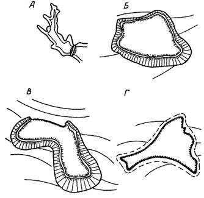
Рис.
1. Типы гидроотвалов
1.5. В зависимости от степени ответственности, местных условий,
высоты и интенсивности намыва гидроотвалы делятся на классы капитальности
(табл. 1):
класс
I - особо ответственные - средние и высокие, авария на которых сопряжена с
катастрофическими последствиями для населенных пунктов и предприятий;
класс
II - ответственные - средние и низкие, разрушение которых не может
вызвать серьезных последствий для населенных пунктов;
класс
III - малоответственные - низкие, расположенные в незастроенных
местностях.
Примечание.
Класс капитальности отдельных элементов гидроотвала (ограждающих дамб,
водосбросных устройств и др.) определяют в соответствии со СНиП II-А, 3-62, СНиП II-50-74
и действующими техническими условиями на проектирование золоотвалов и
хвостохранилищ.
Таблица 1
|
Высота
гидроотвала, м
|
Характер
заселения местности в районе размещения гидроотвала
|
Класс
капитальности гидроотвала
|
|
благоприятные
гидрометеорологические условия и равнинный рельеф местности при
интенсивности намыва в месяц, м
|
неблагоприятные
гидрометеорологические условия и пересеченный рельеф местности при
интенсивности намыва в месяц, м
|
|
< 2
|
> 2
|
< 2
|
> 2
|
|
>
30
|
Независимо от заселенности
|
I
|
I
|
I
|
I
|
|
10
- 30
|
Заселенная
|
I
|
I
|
I
|
I
|
|
Незаселенная
|
II
|
I
|
II
|
I
|
|
<
10
|
Заселенная
|
III
|
II
|
II
|
II
|
|
Незаселенная
|
III
|
III
|
III
|
III
|
Примечания. 1.
Для гидроотвалов типа Г класс капитальности гидроотвалов следует снижать на
единицу.
2. К районам с неблагоприятными гидрометеорологическими условиями
следует относить зоны с выпадением осадков более 600 мм/г и нормой годового
стока более 10 л/с×км2.
2.1.
Гидроотвалы проектируют на основе проекта разработки месторождения полезного
ископаемого по техническому заданию в зависимости от общего комплекса
проектируемых вскрышных работ.
2.2.
В техническое задание на проектирование необходимо включать:
календарный
план горных работ по вскрытию месторождений;
материалы
инженерно-геологических изысканий в районе вскрышных работ (карьера);
данные
о расходе пульпы, подаваемой в гидроотвал (м3/ч), и содержании в ней
твердого компонента.
2.3.
Материалы инженерно-геологических изысканий должны содержать следующую
документацию:
топографическую
карту (в масштабе 1:10000 или 1:5000) территорий, на которых находятся
возможные земельные участки под гидроотвал;
топографическую
карту участка гидроотвала в масштабе 1:2000 или 1:1000;
сведения
о расходе и уровне воды в водотоках (озерах, реках, ручьях), режиме водотоков
(сроки паводков, ледостава, мутность и др.);
гидрометеорологические
данные (скорость ветра, элементы ветровых волн водотоков, количество выпадающих
осадков, норма годового стока).
Общие положения
3.1.
Проектирование гидроотвала следует производить в две стадии: технический проект
и рабочие чертежи. Кроме того, должен быть составлен проект производства работ
(ППР).
В
техническом проекте определяют: место расположения и геометрические размеры
гидроотвала, границу опасной зоны, объемы грунта, намываемого в него по годам,
объем подготовительных работ и технико-экономические показатели. Утвержденный
технический проект является основанием для заказа оборудования, разработки
рабочих чертежей и финансирования строительства.
3.2.
Конструкция гидроотвала должна удовлетворять следующим требованиям:
устойчивости
внешнего откоса на сдвиг и оползание;
плотности
намытых грунтов пляжа, необходимой для производительной и безопасной работы по
намыву;
достаточному
водоосветлению в местах водослива.
Выбор
места расположения гидроотвала
3.3.
Гидроотвалы необходимо располагать на площадях, непригодных или малопригодных
для сельского хозяйства, промышленности, жилищного строительства и зон отдыха.
Расположение
гидроотвала должно обеспечить минимальную длину транспортировки и высоту
подъема пульпы, удобную организацию водоудаления. При прочих равных условиях
гидроотвал относительно карьера следует располагать на участке, где ограждающие
дамбы будут иметь меньшую протяженность и годовое приращение не выше 3 - 5 м.
При
выборе места расположения гидроотвала необходимо учитывать поверхностный сток и
предусматривать, если это целесообразно, использование его для организации
оборотного водоснабжения и возможность отвода ливневых и талых вод с
территорий, прилегающих к отвалу.
3.4.
При выборе площадки под гидроотвал следует учитывать, что согласно СНиП II-53-73 к основанию на участке упорной призмы должны быть
предъявлены те же требования, что и к основанию плотин.
На
участке, выбранном для возведения гидроотвала, должны быть проведены изыскания,
построен геологический разрез и определены геотехнические свойства грунтов.
Материалы
изысканий должны содержать:
топографический
план (в масштабе 1:2000 - 1:1000) с обозначениями геологических выработок
(шурфов и скважин) и линий геологических разрезов;
геолого-литологические
разрезы с нанесенным уровнем грунтовых вод: горизонтальный в масштабе 1:500 -
1:1000 и вертикальный в масштабе 1:50 - 1:100;
колонки
по геологическим выработкам;
сводные
таблицы и графики физико-механических свойств грунтов: гранулометрический
состав, плотность и объемная масса, влажность, пористость, пределы и число
пластичности, сопротивление сдвигу и сжатию, коэффициент фильтрации, содержание
органических веществ.
3.5.
Место расположения гидроотвала должно быть согласовано с исполкомом местного
Совета, санитарной инспекцией, Госгортехнадзором горного округа и организацией,
проектирующей данный карьер.
На
основании акта о выборе места расположения гидроотвала, составленного
проектировщиками при участии заказчика, должны быть изучены варианты, связанные
с выбором площадки под гидроотвал, и произведено технико-экономическое
обоснование принятого решения.
Определение
объема грунта, подлежащего разработке гидравлическим способом
3.6.
Объем вскрышных пород, подлежащих укладке в отвал, определяется календарным
планом разработки и вскрыши данного месторождения с учетом способа производства
работ.
3.7.
На основании данных изысканий из общего объема вскрыши определяют объемы
грунта, разработка которых гидравлическим способом и укладка в гидроотвал
возможны и экономически целесообразны.
Из
объема грунта, планируемого для разработки гидравлическим способом, необходимо
исключить:
недоборы
грунта в забое, разработка которых невозможна способом гидромеханизации;
охранный
целик над полезным ископаемым, предохраняющий его от замачивания (размеры его
определяют в проекте в зависимости от свойств грунтов вскрыши и схемы
производства работ);
верхний
черноземный слой, используемый в дальнейшем для нужд сельского хозяйства при
проведении рекультивационных работ.
3.8.
Емкость гидроотвала должна соответствовать сроку разработки карьера,
предусмотренного проектом.
3.9.
Емкость гидроотвала, потребная для складирования карьерного грунта,
соответствует объему грунтов вскрыши и может быть вычислена по формуле
E = b0V0 + Vп + Vд, (1)
где V0 -
объем породы в естественном состоянии (целике), планируемый для заполнения
гидроотвала в начале и за весь период эксплуатации, м3;
Vп -
объем прудка-отстойника, рассчитанного как отстойник непрерывного действия, м3
(ориентировочно его можно принимать равным 5 - 10-суточному объему пульпы,
подаваемой в гидроотвал);
Vд -
дополнительная емкость, необходимая главным образом, для аккумуляции стока
поверхностных вод, тяготеющего к гидроотвалу, м3 (размер этой
емкости определяют в проекте);
b0 -
коэффициент гидроразрыхления карьерного грунта, принимаемый в зависимости от
средневзвешенного состава грунта в карьере (приложение 1):
Песок............................................................. 1,00
Песок
с примесью:
глины................................................. 1,05
- 1,10
пыли................................................... 1,10
Супесь........................................................... 1,05
- 1,15
Суглинки...................................................... 1,2
- 1,5
Глина............................................................. 1,5
- 2,0
3.10.
Объем намытого грунта для каждой зоны (рис. 2)
определяют по формуле
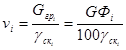
, (2)
где 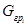
- масса грунта
в соответствующей зоне, т;
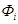
- процентное содержание фракций карьерного
грунта, крупность которых для соответствующей зоны принимается по табл. 2;
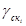
- средневзвешенное значение объемной массы
скелета грунта в соответствующей зоне, т/м3;
G - масса карьерного (вскрышного) грунта, т;
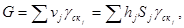
(3)
здесь vj - объем грунта j-го слоя, м3;
hj - средняя мощность j-го слоя, м;
Sj - площадь j-го
слоя вскрыши, м2;
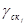
- объемная
масса скелета карьерного грунта j-го
слоя, т/м3.
Объемная
масса скелета намытого грунта и диаметры частиц по зонам приведены ниже (см.
табл. 2 и приложение 2).
Объем
намытого в отвал грунта равен сумме объемов грунта по зонам и может быть
определен из выражения
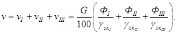
(4)
Результаты
расчетов по формуле (4) должны быть
сопоставлены с произведением b0v0
[формула (1)]. В случае расхождения
более 5 % расчеты следует пересмотреть.
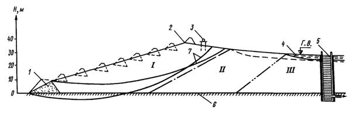
Рис.
2. Зоны фракционирования намытого грунта:
I - упорная призма; II -
промежуточная зона; III - центральная (прудковая)
зона; 1 и 2 - дамбы соответственно первичного и вторичного обвалования; 3 -
разводящий пульпопровод; 4 - прудок-отстойник; 5 - шандорный колодец; 6 -
основание; 7 - возможные кривые скольжения
Таблица
2
|
Зона
|
Уклон откоса
намыва
|
Характеристика
намытого грунта
|
Объемная
масса скелета 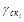 (числитель)
и коэффициент гидроразрыхления bi намытых
грунтов (знаменатель)
|
|
наименование
грунта
|
средняя
медианная крупность частиц d50, мм
|
характерная
крупность частиц d, мм
|
пределы
изменения
|
средние
значения при высоте гидроотвала Н
|
|
< 10 м
|
10 - 30 м
|
|
I
|
0,01 - 0,07
|
Пески, супеси
|
0,15-0,3
|
0,1
|
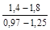
|
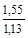
|
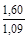
|
|
II
|
0,01
- 0,015
|
Супеси, суглинки
|
0,01 - 0,15
|
0,01 - 0,1
|
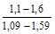
|
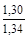
|
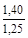
|
|
III
|
0,005
|
Глины, суглинки
|
0,005 - 0,01
|
<
0,01
|
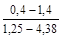
|
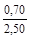
|
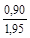
|
Примечание. При
наращивании гидроотвала свыше 30 м объемная масса скелета грунта должна быть
уточнена контрольным определением.
Технология
намыва
4.1.
Выбранная технология намыва отвала должна обеспечить устойчивость гидроотвала и
минимальную стоимость производства работ, а также требуемую степень осветления
сточной воды в отстойном прудке.
Технология
намыва должна предусматривать:
обеспечение
приема грунта на отвале без нарушения режима работы оборудования;
создание
упорной призмы из супесчаных грунтов с несущей способностью, обеспечивающей
возможность производства работ и устойчивость внешних откосов;
механизацию
подготовительных и вспомогательных работ на гидроотвале.
4.2.
При выборе схемы намыва связных грунтов необходимо учитывать следующие
обстоятельства:
осаждение
песчаных фракций намываемого грунта происходит в среде повышенной плотности,
поэтому скорость их выпадения замедляется, а объемная масса намытого грунта
уменьшается;
при
выпадении песчаных частиц поры между ними заполняются пылеватыми и глинистыми
частицами, намытый грунт имеет микрослоистую текстуру, что резко ухудшает
фильтрационные свойства намытого грунта;
в
процессе намыва в пляжной зоне грунт может быть уложен с плотностью, не
обеспечивающей достаточной несущей способности для работы людей и механизмов,
что усложняет технологию работ;
роль
технологии намыва не всегда ограничивается укладкой грунта, в ряде случаев
появляется необходимость в выборе химических или других способов ускорения
осветления воды, а также консолидации больших объемов разжиженной массы,
поступающей в отвал;
в
зависимости от типа гидроотвала схема намыва принимается односторонней,
двусторонней или кольцевой; взятый за основу низкоэстакадный способ не
исключает возможности выбора других способов намыва гидроотвалов (низкоопорный,
зенитный и др.).
4.3. Принципиальная основа технологии намыва должна отвечать
следующим требованиям.
Гидроотвал
необходимо возводить так, чтобы по всей его периферии был образован пляж
шириной не менее 60 м, а отстойный прудок прижат к естественному откосу или
расположен в центре гидроотвала.
Площадь
отстойного прудка должна обеспечивать осветление отработанной воды (с учетом
допускаемого содержания мелких фракций) и создавать условия для работы на
водообороте. Излишек площади прудка нежелателен, так как он способствует
снижению объема грунта, намываемого в надводной части, и увеличению разжижения
глинистого грунта в прудке.
Скорость
поднятия уровня воды в прудке определяется интенсивностью наращивания
гидроотвала по всей его площади.
При
намыве пляжа должна максимально использоваться возможность фракционирования
грунта для образования надводного профиля, при котором крупность фракций закономерно
возрастает в сторону наружного откоса.
Пляж
намывают тонкими слоями, с перерывами для консолидации грунтовой массы,
требующейся по условиям устойчивости гидроотвала. При этом необходимо
учитывать, что уплотнение намытого слоя происходит в результате понижения
депрессионной кривой фильтрационного потока и испарения, в то время как
длительный намыв в одном месте может привести к переувлажнению намытого грунта
на значительную глубину. Толщину слоя намыва принимают: для глин 0,25 - 0,30 м,
для суглинков 0,3 - 0,4, для супесей 0,4 - 0,5 м. Максимальную
продолжительность непрерывного намыва слоев во избежание переувлажнения уже
уплотненных нижележащих слоев ограничивают временем: для глин 18 ч, для
суглинков 24 ч. Возобновление намыва на ранее намытый супесчаный слой
допускается после снижения влажности грунта на пляже до 18 - 20 % (примерно
через 4 - 6 суток).
Скорость
потока пульпы на пляже для мелкопесчаных и пылевато-глинистых грунтов может
быть определена по рис. 3 или по
формуле
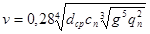
,
где dср - средневзвешенная крупность намытого грунта, мм;
cп - массовая консистенция пульпы;
g - ускорение силы тяжести; g =
9,81 м/с2;
qп - удельный расход пульпы, л/с.
Требуемую
скорость потока пульпы следует подбирать по ходу проектирования путам выбора
диаметра и количества одновременно работающих выпусков. Для расхода пульпы 1500
- 2000 м3/ч рекомендуется использовать 6-10 открытых выпусков
диаметром 100 - 200 мм.
Расстояние
между выпусками не должно превышать 6 - 8 м во избежание образования застойных
зон вблизи обвалования.
4.4.
Выполнения требований п. 4.3 можно
достичь при рассредоточенном выпуске пульпы из отверстий пульпопровода,
уложенного на эстакаде. Эстакадный способ обеспечивает высокие качество и
производительность намыва.
4.5.
При эстакадном способе следует проектировать укладку пульпопровода по периметру
площади намыва в непосредственной близости от обвалования. Стойки опор
рекомендуется располагать не далее подошвы откоса обвалования.
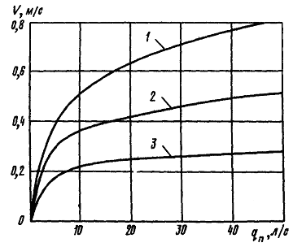
Рис.
3. Зависимость скорости потока намыва v от
удельных расходов пульпы qп и
крупности намываемого грунта:
1 и
2 - песок соответственно крупно- и мелкозернистый; 3 - пылеватый грунт
При
высоте обвалования около 3 м высота эстакад должна быть около 2,5 м. В таком
случае эстакада имеет простую конструкцию, обеспечивающую благоприятные условия
для отсыпки обвалования, и замытые стойки опор можно сравнительно легко извлечь
подъемным механизмом.
4.6.
Для отсыпки обвалования забор грунта из намытого пляжа не допускается. Грунт
для отсыпки обвалования необходимо забирать экскаватором (драглайном) из излишков
наружного откоса с одновременной планировкой этого откоса под запроектированное
заложение.
Дамбу
вторичного обвалования при наращивании гидроотвала на устойчивость не
рассчитывают. Во избежание размыва внешнего откоса гидроотвала укладывать
распределительный пульпопровод на дамбе обвалования не разрешается.
Для
перехода в течение сезона на новые ярусы намыва намывной пульпопровод следует
составлять из двух ветвей, противоположно направленных от магистрального
пульпопровода. Тогда перекладку одной ветви можно производить без длительной
остановки гидромеханизмов.
4.7.
Размеры пляжа назначают исходя из гранулометрического состава грунтов карьера и
скорости осаждения пылевато-глинистых частиц в прудке-отстойнике. При этом
следует избегать образования в верхних горизонтах прудка застойных зон из-за
перемещения уреза воды в прудке.
4.8.
При проектировании гидроотвалов высотой более 10 м необходимо учитывать, что
давление слабых глинистых грунтов центральной зоны на упорную призму
увеличивается пропорционально высоте. Незначительные нарушения технологии
намыва могут привести к образованию оползней и утечке глинистой суспензии из
отстойного прудка. Для предотвращения этих повреждений при намыве отвала
следует предусмотреть возможность увеличения устойчивости намытых масс грунта
путем пригрузки наружных откосов гидроотвала сухим грунтом с высокими
фильтрационными свойствами, а также путем устройства берм на наружном откосе.
Бермы
необходимы, кроме того, как проезды и площадки для наращивания последующих
ярусов намыва. Расположение и размеры берм следует выбирать исходя из условий и
средств производства работ.
4.9.
В случае проектирования гидроотвалов высотой более 30 м при расчетных
коэффициентах запаса устойчивости откосов менее 1,2 и объеме отстойного прудка,
не обеспечивающем требуемого осветления воды, необходимо рассмотреть вариант
выноса прудка-отстойника за пределы гидроотвала. Следует учесть, что помимо
снижения класса капитальности гидроотвала при этом достигается увеличение его
емкости и значительно облегчается работа прудка-отстойника. Однако
строительство вторичного отстойника требует более массивного обвалования,
которое необходимо рассчитывать согласно СНиП II-53-73
как водоудерживающую плотину. Исходя из этого, вторичный отстойник
целесообразно располагать в выработанном пространстве карьера.
Выбор
типа дамбы первичного обвалования
4.10.
Дамба первичного обвалования обеспечивает образование начальной емкости
гидроотвалов и фильтрацию воды из намытого грунта.
Дамбу
в основании наружного откоса отвала следует проектировать с таким расчетом,
чтобы после окончания намыва начального яруса объем срезаемого грунта обеспечил
бы отсыпку дамбы обвалования следующего яруса. Предельно допустимые размеры
первичной дамбы обвалования после среза грунта должны быть указаны в проекте.
4.11.
Основные параметры и конструкция ограждающей дамбы зависят от типа гидроотвала,
рельефа местности и инженерно-геологических условий основания гидроотвала.
Высота
дамбы первичного обвалования должна назначаться с учетом состава карьерного
грунта, интенсивности намыва, емкости прудка-отстойника и гидроотвала в целом.
Минимальную высоту дамбы следует принимать близкой к высоте намыва, т.е. 3 - 5
м.
Превышение
гребня ограждающей дамбы первичного и вторичного обвалований над уровнем воды в
прудке должно быть достаточным для предотвращения перелива через него пульпы во
время намыва.
Ширину
гребня дамбы первичного обвалования следует назначать с учетом условий
строительства и эксплуатации гидроотвала, но не менее 4 м при необходимости
проезда машины и не менее 3 м при отсутствии такой необходимости.
4.12.
Откосы дамбы первичного обвалования должны иметь достаточную устойчивость
против оползания при заданных условиях возведения и эксплуатации гидроотвала.
При
высоте дамбы первичного обвалования более 3 м заложение откосов следует
определять расчетом на устойчивость дамбы.
При
проектировании гидроотвалов III
класса заложение откосов дамбы первичного обвалования высотой до 3 м должно
соответствовать углу естественного откоса грунта.
4.13.
Выбор материала для возведения дамбы первичного обвалования должен
производиться с учетом возможности использования местных грунтов, применения
гидромеханизации, а также с учетом дренирующей способности материала.
Ограждающие
дамбы необходимо возводить из песчаных грунтов. Применение суглинков и супесей
требует специальных технико-экономических обоснований (СНиП II-53-73).
Грунты
для устройства дамбы первичного обвалования следует выбирать с более высокими
свойствами по сравнению с грунтами упорной призмы. Фильтрационный поток на
отдельных участках при выходе в низовой откос дамбы первичного обвалования не
должен вызывать фильтрационных деформаций.
4.14.
Для надежного сопряжения тела первичной дамбы обвалования с основанием
необходимо удалять со всей площади ее основания почвенно-растительный слой и
слабые грунты.
Сопряжение
ограждающей дамбы с водосбросными сооружениями должно предотвращать появление
опасной для сооружения сосредоточенной фильтрации.
Проектирование
водосбросных и водозаборных сооружений. Отвод поверхностных вод
4.15.
Водосбросные сооружения предназначаются для отвода осветленной воды за пределы
отвала. Они могут выполняться в виде сбросных колодцев, водозаборных плавучих
насосных установок или передвижных насосных установок с плавучим водозабором.
Примечание.
Необходимость в полном или частичном опорожнении прудка-отстойника может
возникнуть в тех случаях, когда первичной дамбе или боковой призме отвала
угрожает опасность разрушения вследствие переполнения прудка-отстойника,
разрушения пляжа намыва от волновых воздействий, интенсивной фильтрации,
сопровождающейся выпором грунта и др.
4.16.
При проектировании водосбросных устройств для гидроотвалов овражного и
балочного типов должен быть предусмотрен комплекс мероприятий, обеспечивающих
пропуск ливневых и паводковых вод с водосбросной площади гидроотвала. Отказ от
применения специального водосбросного устройства необходимо обосновать.
4.17.
Сооружения и оборудование для сброса воды (водосбросные колодцы и насосные
станции) должны быть расположены в зоне наиболее осветленной воды в центральной
части прудка-отстойника. При этом необходимо учитывать возможность влияния
ветро-волновых течений на процесс отстоя воды в прудке.
Для
обеспечения слива верхнего, наиболее осветленного слоя воды на всасывающей
трубе плавучих насосных станций рекомендуется предусматривать устройства в виде
металлических ящиков, обеспечивающих слой слива толщиной 5 - 8 см.
4.18.
Для возмещения потерь и регулирования положения горизонта воды в прудке-отстойнике
(с целью обеспечения осветления воды) подпиточную воду необходимо подавать на
возможно большем расстоянии от водосбросного колодца или насосной станции.
Расход подпиточной воды следует принимать из расчета 0,6 - 1,0 м3 на
1 м3 карьерного грунта.
4.19. Качество осветленной воды при сбросе ее из гидроотвалов во
внешние водоисточники должно удовлетворять «Правилам охраны поверхностных вод
от загрязнения сточными водами» № 372-61 и нормам «Предельные допустимые
концентрации вредных веществ в воде водоемов санитарно-бытового
водопользования» № 847-70.
4.20.
Сбросные колодцы следует рассчитывать согласно действующим типовым проектам.
Для регулирования уровня воды в прудке-отстойнике на сбросных колодцах следует
предусматривать шандоры.
4.21.
Для повышения устойчивости откосов гидроотвала за счет снижения кривой
депрессии и отвода фильтрационных вод при намыве во избежание обводнения района
работ должны быть запроектированы дренажные устройства. Необходимость
устройства дренажа на гидроотвалах, а также его конструкция и расположение
должны быть обоснованы проектом в зависимости от типа гидроотвала, его высоты,
инженерно-геологических условий основания, конструкций первичной дамбы и др.
(СНиП II-53-73, пп. 2.53-2.65).
Наиболее
простой способ дренирования гидроотвала - возведение первичной дамбы
обвалования из водонепроницаемого грунта, коэффициент фильтрации которого
больше, чем у намываемых грунтов.
4.22.
Для защиты гидроотвала от поступления ливневых и паводковых вод с прилегающей
территории следует устраивать дренажные канавы. Сечение канав, уклоны и
количество поступающей воды определяют в проекте с учетом площади водосброса,
рельефа местности и гидрометеорологических условий.
Фракционирование
связных грунтов при намыве
5.1.
При расчете фракционирования (раскладки) связных намываемых грунтов необходимо
учитывать следующие обстоятельства.
При
намыве гидроотвалов происходит фракционирование грунта по крупности с
уменьшением диаметра частиц по мере удаления от выпуска. Характер
фракционирования при намыве связных грунтов зависит от степени неоднородности
карьерного грунта, количества мелкодисперсных частиц, удельного расхода и
консистенции пульпы, а также от изменения положения уреза воды в
прудке-отстойнике.
Фракционирование
в процессе намыва связных грунтов становится заметным при коэффициенте
неоднородности грунта Kн = d60/d10 ³ 5 и зависит от расхода и консистенции пульпы.
Значительное
влияние на характер раскладки фракций имеет положение границ прудка-отстойника.
В упорной призме откладывается большая часть песчаных частиц. В промежуточной
зоне (зоне колебания уреза воды в прудке) резко возрастает содержание глинистых
фракций. В центральной (прудковой) зоне преимущественно осаждаются глинистые и
пылеватые частицы, в местах поступления потока пульпы в прудок-отстойник -
мелкопесчаные частицы (рис. 4, 5).
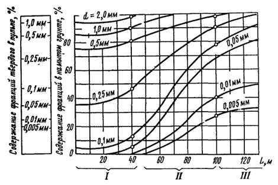
Рис.
4. Изменение гранулометрического состава грунта по длине откоса намыва:
I, II, III - зоны гидроотвала
5.2.
Размеры зон гидроотвала и расчетные характеристики намываемого грунта следует
принимать по гидроотвалам-аналогам, у которых способы намыва одинаковые, а
разрабатываемый грунт близок по своим характеристикам к грунту, складируемому в
проектируемый гидроотвал. При отсутствии гидроотвалов-аналогов рекомендуется
использовать графические методы В.Н. Маслова, П.И. Гордиенко или разработанный
ВНИИГС метод расчета фракционирования по откосу намыва для отвалов из связных
грунтов (приложение 3).
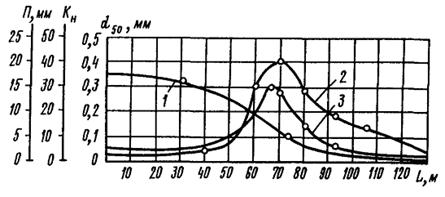
Рис.
5. Изменение характера фракционирования по длине откоса намыва:
1 - d50; 2 - Kн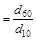
; 3
- П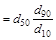
(П - параметр фракционирования)
При
проведении расчетов графическими методами можно руководствоваться следующими
рекомендациями Б.А. Волнина по прогнозу распределения фракций намываемого
грунта:
в
упорной призме отвала будут откладываться частицы крупностью > 0,1 и ³
0,05 мм при содержании в карьерных грунтах соответственно до 60 и до 25 %
частиц менее 0,1 мм;
в
центральной части отвалов в обоих случаях откладываются частицы размерами менее
0,1 мм.
5.3.
Расстояние от начала намываемого откоса до центра распределения фракции без
учета изменения плотности по откосу намыва можно вычислить по формуле
В.А. Мелентьева:
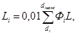
(5)
где Li - длина каждой из зон LI, LII, LIII, M;
L - длина откоса намыва, м;
Фi - содержание фракций от di
до dмакс в
исходном грунте.
5.4. Ширину каждой зоны с учетом плотности грунта следует
определить по формулам:
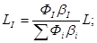
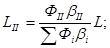
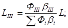
где L - длина откоса намыва от обвалования до центральной части прудка,
м;
bi - коэффициент гидроразрыхления.
5.5.
Длину пляжа необходимо проверять исходя из условий безопасного положения кривой
депрессии (см. п. 5.25).
5.6.
Средний уклон поверхности намыва грунтов зависит от удельного расхода пульпы на
откосе намыва, ее консистенции, крупности частиц грунта и принимается по табл. 3.
Таблица 3
|
Грунт
|
Уклоны
поверхности намыва
|
|
надводные Jнадв
|
Подводные Jподв
|
|
Песок:
|
|
|
|
крупнозернистый
|
0,15 - 0,05
|
0,30 - 0,20
|
|
среднезернистый
|
0,08 - 0,05
|
0,20 - 0,15
|
|
мелкозернистый
|
0,06 - 0,02
|
0,15 - 0,10
|
|
Супесь
|
0,03 -0,01
|
0,07 - 0,015
|
|
Глина
|
0,015 - 0,007
|
<
0,003
|
|
Глина, мел
|
0,02 - 0,008
|
<
0,003
|
Профиль
отложения пляжной зоны имеет вогнутую форму с общим уклоном от места выпуска
пульпы к прудку-отстойнику.
Профиль
поверхности намытых грунтов ниже уровня воды также имеет вогнутую форму с
постепенным уполаживанием откоса по мере удаления от уреза воды прудка.
Расчетные
физико-механические характеристики грунтов, укладываемых в отвал
5.7. Для проектирования и возведения гидроотвала необходимо
установить расчетные физико-механические характеристики грунтов основания,
дамбы первичного обвалования и грунтов, подлежащих укладке в гидроотвал.
5.8.
Расчетные характеристики грунтов следует устанавливать по данным:
инженерно-геологических
и гидрологических изысканий карьера, подлежащего разработке, и района,
отведенного под складирование пород в гидроотвал;
расчета
фракционирования карьерного грунта в гидроотвале;
лабораторного
определения характера изменения физико-механических свойств карьерного и
намытого в гидроотвал грунтов;
материалов
полевых и лабораторных исследований складирования глинистых грунтов в
аналогичных условиях.
Примечание.
Если проектируемый гидроотвал располагается в районе действующих гидроотвалов,
то необходимо использовать результаты исследований этих отвалов.
5.9.
Основными расчетными характеристиками грунтов при проектировании гидроотвалов
должны быть:
гранулометрический
состав грунтов;
число
и пределы пластичности глинистых грунтов (текучести Wт и
раскатывания Wр) и максимальная молекулярная влагоемкость Wм;
плотность
грунта g;
объемная
масса скелета грунта gск;
влажность
грунта W;
коэффициент
фильтрации Kф;
коэффициент
внутреннего трения tgj;
удельное
сцепление C;
коэффициент
уплотнения a.
Кроме
указанных характеристик, для намываемых грунтов устанавливают средневзвешенный
диаметр частиц dср,
действующий диаметр d10,
меньше которого имеют 10 % массы всех частиц, диаметры d60 и d90 меньше которых имеют соответственно 60 и 90 % массы всех частиц.
5.10.
Расчетные характеристики грунтов при проектировании гидроотвала устанавливают
отдельно для основания гидроотвала, дамбы первичного обвалования и упорной
призмы.
5.11.
Расчетные характеристики грунтов основания гидроотвала устанавливают по
результатам статистической обработки материалов инженерно-геологических
изысканий на площади, отведенной для намыва отвала.
При
определении расчетных характеристик грунтов основания особое внимание должно
быть уделено прочностным свойствам.
Коэффициент
запаса прочности основания определяют как отношение предельной нагрузки Pп к расчетной Pр:
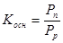
. (6)
Для
неслабых грунтов основания на стадии технического проекта расчетные
характеристики разрешается устанавливать по аналогии, а также по усредненным
значениям характеристик, приведенным в табл. 4.
5.12.
Для дамб первичного обвалования расчетные характеристики грунтов следует
принимать исходя из физико-механических свойств грунтов, планируемых для
использования при строительстве дамбы.
Для
определения расчетных характеристик грунта необходимо установить его
гранулометрический состав на основании лабораторных определений проб,
отобранных из грунта (местного или привозного), предназначенного для
строительства дамбы обвалования.
Основные
расчетные характеристики грунтов для выполнения расчетов фильтрации и
устойчивости откосов дамбы первичного обвалования: плотность, объемная масса
скелета, массовая влажность грунта (в долях единицы), коэффициент фильтрации,
коэффициент сопротивления сдвигу (угол внутреннего трения и сцепления), пределы
и число пластичности, консистенция.
После
возведения дамбы первичного обвалования перед заполнением гидроотвала принятые
в расчетах характеристики грунтов необходимо проверить на основе контрольных
лабораторных определений. В случае расхождения расчетных и фактических
характеристик грунта в рабочие чертежи следует внести исправления.
5.13. Расчетные физико-механические характеристики намываемого
грунта упорной призмы назначают в зависимости от технологии намыва и
физико-механических свойств грунтов карьера по аналогии с ранее намываемыми
отвалами. Это допускается при совпадении гранулометрического состава карьерных
грунтов.
Таблица 4
|
Грунты
|
Угол
внутреннего трения j, град
(числитель) и удельное сцепление С, кгс/см2 (знаменатель) при
коэффициенте пористости e
|
|
0,41-0,5
|
0,51-0,6
|
0,61-0,7
|
0,71-0,8
|
0,81-0,95
|
0,96-1,1
|
|
Песчаные:
|
|
|
|
|
|
|
|
гравелистые
и крупные
|
41/0
|
38/0
|
36/0
|
-
|
-
|
-
|
|
средней
крупности
|
38/0
|
36/0
|
33/0
|
-
|
-
|
-
|
|
мелкие
|
36/0,01
|
34/0
|
30/0
|
-
|
-
|
-
|
|
пылеватые
|
34/0,02
|
32/0,01
|
28/0
|
-
|
-
|
-
|
|
Глинистые при влажности на
границе раскатывания, %:
|
|
|
|
|
|
|
|
9,5-12,4
|
23/0,03
|
22/0,01
|
21/0
|
-
|
-
|
-
|
|
12,5-15,4
|
22/0,14
|
21/0,07
|
20/0,04
|
19/0,02
|
-
|
-
|
|
15,5-18,4
|
-
|
20/0,19
|
19/0,11
|
18/0,08
|
17/0,04
|
16/0,02
|
|
16,5-22,4
|
-
|
-
|
18/0,28
|
17/0,19
|
16/0,10
|
15/0,06
|
|
22,5-26,4
|
-
|
-
|
-
|
16/0,36
|
15/0,25
|
14/0,12
|
|
26,5-30,4
|
-
|
-
|
-
|
-
|
14/0,40
|
13/0,22
|
Примечание.
Данные таблицы приведены по приложению 1 СНиП II-И.4-62*.
При
выборе расчетных характеристик грунта необходимо учитывать следующее:
при
намыве связных грунтов карьера с коэффициентом неоднородности Kн 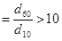
происходит четкое фракционирование грунта по зонам; в упорной призме
откладываются в основном частицы диаметром более 0,1 мм;
естественная
влажность и объемная масса скелета намытого грунта упорной призмы изменяются во
времени: за период 4-6 суток W
уменьшается от 17-20 до 12-10 %, gск
увеличивается от 1,45-1,50 до 1,55-1,60 г/см3;
для
грунтов упорной призмы характерна тонкослоистая текстура отложений, которая
возникает в результате периодического изменения режима намыва и
гранулометрического состава твердого компонента пульпы; намытые тонкослоистые
грунты имеют различный коэффициент фильтрации Kф в
продольном направлении Kф
больше, чем в поперечном.
Гранулометрический
состав намытых грунтов упорной призмы следует рассчитывать графоаналитическим
методом, исходя из состава карьерного грунта и характера фракционирования
(приложение 4). Основные
расчетные физико-механические характеристики грунта при наращивании
гидроотвалов высотой до 30 м принимают по табл. 5. При отклонении состава карьерного грунта более чем на
5 % характеристики грунта должны быть проверены дополнительными расчетами.
Объемную
массу скелета намытого грунта можно определить по рис. 6, 7, 8, угол внутреннего трения - по рис. 9.
Для
песчаных грунтов упорной призмы в зависимости от gск
необходимо определять угол внутреннего трения и коэффициент фильтрации (табл. 6 и 7)
по СНиП II-И.5-62*.
Таблица 5
|
Показатель
|
Усредненные
значения характеристик
|
|
грунта
карьера
|
намытого
грунта
|
|
упорная
призма
|
промежуточная
зона
|
центральная
зона
|
|
Естественная влажность
грунта, %
|
13,0
|
18,0
|
31,0
|
76,0
|
|
Объемная масса грунта,
г/см3
|
1,83
|
1,88
|
1,84
|
1,58
|
|
Объемная масса скелета
грунта, г/см3
|
1,62
|
1,60
|
1,40
|
0,90
|
|
Плотность, г/см3
|
2,69
|
2,68
|
2,70
|
2,73
|
|
Коэффициент пористости
|
0,66
|
0,68
|
0,93
|
2,03
|
|
Пористость, %
|
39,5
|
40,3
|
48,2
|
62,1
|
|
Коэффициент водонасыщения
|
0,53
|
0,72
|
0,91
|
>
1,0
|
|
Консистенция
|
<
0
|
0
- 0,5
|
0,75
- 1,0
|
>
1,0
|
|
Коэффициент фильтрации,
м/сутки
|
0,43
- 3,88
|
Песок
- 0,9, супесь - 0,2
|
<
0,01
|
10-5
|
|
Угол внутреннего трения,
град
|
26
|
30
|
4
- 10
|
0
- 3
|
|
Сила сцепления, кгс/см2
|
0,25
|
0,01
- 0,04
|
0,2
- 0,4
|
<
0,2
|
|
Содержание частиц, %:
|
|
|
|
|
|
d > 0,05 мм
|
44,0
|
74,0
|
47,0
|
4,0
|
|
d = 0,05¸0,005 мм
|
21,0
|
17,0
|
27,0
|
47,0
|
|
d < 0,005 мм
|
35,0
|
9,0
|
26,0
|
49,0
|
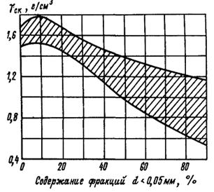
Рис.
6. Область возможной объемной массы скелета намытого грунта через 2-6 суток
после намыва
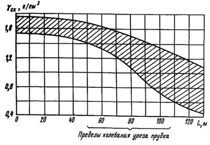
Рис.
7. Область возможного изменения объемной массы скелета грунта при длине
намываемого откоса
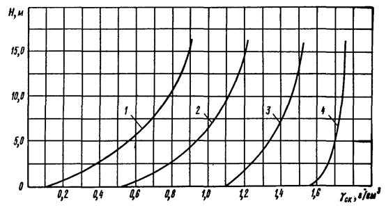
Рис.
8. Усредненные показатели объемной массы скелета грунта с учетом консолидации
во времени при наращивании гидроотвалов
1 и
2 - для центральной зоны при глубине прудка-отстойника соответственно 0,4-0,6 и
0,2-0,4 м; 3 - для промежуточной зоны; 4 - для упорной призмы
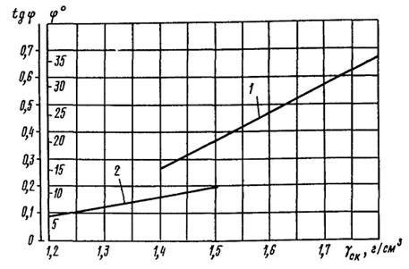
Рис.
9. Корреляционная зависимость угла внутреннего трения от объемной массы скелета
намытого грунта:
1 -
для супесей при Wе
< 20 %; 2 - для глин и суглинков при Wе
> 30 %
Таблица
6
|
Пески
|
Объемная
масса скелета gск, г/см3
|
Угол
внутреннего трения j, град
|
|
Пылеватые
|
1,38
|
24
|
|
1,40
|
25
|
|
1,45
|
26
|
|
1,50
|
27
|
|
Мелкие
|
1,45
|
29
|
|
1,50
|
30
|
Таблица 7
|
Эффективный,
или действующий, диаметр частиц d10, мм
|
Коэффициент
фильтрации песков Kф, см/с
|
|
при gск = 1,5 г/см3
|
при gск = 1,8 г/см3
|
|
0,05
|
0,006
|
0,0038
|
|
0,08
|
0,016
|
0,0100
|
|
0,10
|
0,025
|
0,0160
|
|
0,20
|
0,090
|
0,0600
|
Естественную
влажность грунтов по длине пляжа намыва следует определять по зависимости
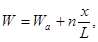
(7)
где Wa - массовая влажность грунта у выпуска
пульпы, составляющая 10-15 %;
n
- коэффициент, равный 20-25;
x/L - относительное
расстояние, равное отношению расстояния x от
выпуска пульпы до рассматриваемого участка к общей длине пляжа L.
Песчаные
грунты имеют следующую степень влажности g (по
СНиП II-15-74):
Маловлажные............................ 0-0,5
Влажные................................. 0,5-0,8
Насыщенные............................. 0,8-1
Определение
размеров прудка-отстойника
5.14.
Прудок-отстойник, образуемый в центре гидроотвала должен выполнять две основные
функции:
улавливание
и осаждение мелких фракций;
обеспечение
запасов воды для организации оборотного водоснабжения, которое обычно применяют
на гидроотвалах.
5.15.
Осветленная в прудке-отстойнике вода отводится за пределы гидроотвала самотеком
через водосбросные колодцы либо ее откачивают плавучими насосными станциями
(оборотная вода). Способ отвода осветленной воды в каждом конкретном случае
предусматривается в ППР. Водосбросные колодцы и плавучие насосные станции
должны располагаться в зоне чистой воды прудка-отстойника и осуществлять
водозабор из верхнего слоя воды, освобожденного от взвеси.
5.16.
При проектировании водосбросных колодцев необходимо учитывать следующее:
водосбросные
колодцы используют для отвода осветленной воды, а при необходимости и для
пропуска паводковых или ливневых вод, что должно быть обосновано в ППР;
качество
воды и условия спуска осветленной воды в реки и другие естественные водоемы
должны удовлетворять соответствующим нормам (см. п. 4.19).
5.17.
При необходимости отвода осветленной воды с помощью плавучих насосных станций
должны быть учтены:
возможность
применения станций при оборотном водоснабжении для подачи воды к
гидромониторам;
расположение
станций у естественного борта прудка-отстойника или в центре прудка при
замкнутом обваловании гидроотвала;
возможность
подключения станций к береговому водоводу шарнирным плавучим трубопроводом для
забора чистой воды из прудка-отстойника;
необходимость
определения нормы водоосветления для оборотной воды из условия наименьшего
износа насосов оборотной воды и трубопроводов.
При
проектировании принимается, что:
оборудование
практически не изнашивается при содержании в воде частиц размером менее 0,05 мм
с концентрацией до 1500 мг/л;
загрязненность
оборотной воды зависит от площади, конфигурации и глубины прудка-отстойника,
длины пути осветления, расхода воды, гранулометрического состава и плотности
грунтовых фракций, осаждающихся в прудке, а также от направления и силы ветра.
5.18.
При расчете размеров и емкости прудка должны быть обеспечены заданные нормы
водоосветления.
Для
создания условий осаждения частиц в прудке-отстойнике скорость потока пульпы
необходимо задавать в соответствии с их средней крупностью (табл. 8).
Таблица 8
|
Крупность
частиц, мм
|
Скорость
потока пульпы, м/с
|
Крупность
частиц, мм
|
Скорость
потока пульпы, м/с
|
|
0,1
|
0,095
|
0,04
|
0,025
|
|
0,08
|
0,071
|
0,02
|
0,0062
|
|
0,06
|
0,045
|
0,001
|
0,0018
|
Объем
прудка должен быть минимальным, обеспечивающим заданное водоосветление и
водоснабжение. Вторичные отстойники целесообразно устраивать при наличии
выработанных пространств после выемки полезного ископаемого. В случае
устройства отстойника на гидроотвале следует провести технико-экономическое
сравнение различных вариантов ускорения водоосветления: применения коагулянтов
магнитной обработки пульпы, увеличения площади гидроотвала или сооружения
вторичного отстойника с дамбами обвалования и системой водоосветления.
5.19.
При определении емкости прудка (приложение 5) необходимо учитывать производительность
водозаборного устройства и баланс воды в гидроотвале.
Годовой
баланс воды (м3)
Q = Qп + Qс + Qи + Qф + Qпор + Qкар, (8)
где Q и Qп - количество воды, поступающее соответственно с гидроотвала в
забой и на гидроотвал в составе пульпы;
Qс -
естественный приток воды к прудку-отстойнику с водосборного бассейна
гидроотвала, включая талые, ливневые и паводковые воды;
Qи и Qф - потери воды соответственно на испарение с площади намыва и на
фильтрацию;
Qпор - количество воды, остающейся в порах намытого грунта;
Qкар - потери воды в карьере (на фильтрацию и испарение).
Значения
Qс, Qи, Qф и Qкар
необходимо определять с учетом климатических и гидрогеологических условий района
расположения гидроотвала по общепринятым методам расчета.
Количество
воды в порах намытого грунта
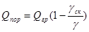
, (9)
где Qгр - объем грунта, поступившего в течение года, м3;
gск -
средняя объемная масса скелета водонасыщенного грунта, г/мс3;
g -
плотность частиц грунта, г/см3.
При
этом принимают, что грунт находится в состоянии полного влагонасыщения.
При
определении годового баланса предполагают, что объем прудка по мере наращивания
гидроотвала от яруса к ярусу существенно не изменяется.
Если
годовой расход воды превышает Q,
рекомендуется организовать подпитку гидроотвала, которая должна покрывать
дефицит воды.
Подпитка
необходима в случаях неравенства расхода и притока воды в прудке-отстойнике:
Qс < Qи + Qф + Qпор + Qкар (10)
Или
Qс < Q
В
случае Qс > Q следует предусмотреть
выпуск избытка воды из гидроотвала.
При
ориентировочных расчетах на 1 м3 грунта гидровскрыши можно принимать
до 1 м3 воды подпитки. Минимальный объем прудка должен быть
равен не менее чем двухсуточному объему воды, поступающей на гидроотвал с
пульпой.
Расчеты
гидроотвалов на фильтрацию
5.20.
Гидроотвалы должны быть рассчитаны на фильтрацию в соответствии с положениями
СНиП II-53-73 и рекомендациями Водгео.
5.21.
Для определения положения депрессионной кривой, фильтрационного расхода и
критической фильтрационной устойчивости гидроотвала в период намыва и по
окончании намывных работ, а также при решении вопросов о целесообразности
применения дренажа следует рассчитывать отвалы на фильтрацию, учитывая
требования охраны окружающей среды.
5.22.
Расчеты на фильтрацию (приложение 6)
производят для отдельных, наиболее характерных поперечных сечений тела или
основания гидроотвала шириной 1 м. Характерность поперечных сечений
определяется высотой гидроотвала, положением прудка-отстойника, литологическими
разрезами тела гидроотвала, рельефом местности, геологическим строением
основания и очертанием врезки подошвы гидроотвала в его основание.
Эти
расчеты могут быть выполнены, если во всех зонах поперечного профиля
гидроотвала будут известны гранулометрический состав намытого грунта, объемная
масса скелета грунта и коэффициент фильтрации.
5.23.
Фильтрационный поток в теле гидроотвала подпитывается в основном за счет
инфильтрации воды из намываемого слоя в пределах упорной призмы, а также за
счет подпитки избыточной поровой водой из глинистых грунтов центральной зоны.
5.24.
Отвалы на фильтрацию следует рассчитывать для различных отметок уровня воды в
прудке-отстойнике, из которых наиболее неблагоприятной является отметка, когда
намыв отвала завершается и прудок-отстойник занимает наивысшее положение.
Каждый
расчетный случай положения кривой депрессии с учетом положения уровня воды в
прудке-отстойнике должен быть разработан в проекте для ряда промежуточных
стадий намыва в соответствии с его условиями. Это позволит выбрать оптимальный
режим намыва, обеспечивающий устойчивость сооружения. Кроме того, при расчетах
фильтрации следует учитывать, что наиболее высоким положение кривой депрессии
будет при водонепроницаемом основании.
Расчеты
отвалов на фильтрацию на проницаемом основании следует выполнять отдельно для
гидроотвала и его основания.
5.25. Положение депрессионной кривой во время намыва определяется
местоположением прудка-отстойника. Минимально допустимое расстояние от уреза
прудка-отстойника до бровки наружного откоса, при котором не происходит выход
фильтрационного потока на откос, рекомендуется вычислять по формуле
В.А. Мелентьева (рис. 10):
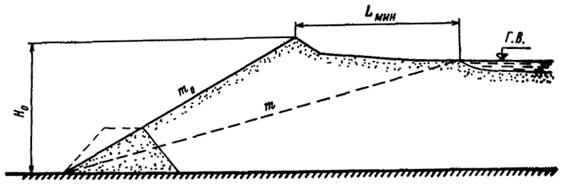
Рис.
10. Расчетная схема минимально допустимого расстояния от уреза отстойного
прудка до бровки наружного откоса m0 в
зависимости от положения депрессионной кривой m
Lмин = H0(m - m0), (11)
где H0 -
высота от основания гидроотвала до поверхности рассматриваемого яруса
гидроотвала;
m -
отношение горизонтальной проекции кривой депрессии к превышению уровня воды в
прудке над основанием гидроотвала;
m0 - отношение горизонтальной проекции наружного откоса к его
высоте.
Значение
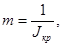
(12)
где Jкр - критический градиент фильтрационного потока в теле гидроотвала.
Критические
градиенты фильтрационного потока и соответствующие им заложения кривой депрессии
можно принять исходя из состава и текстуры намытого грунта (табл. 9).
Таблица 9
|
Грунт
|
Jкр
|
m
|
|
Суглинок
|
0,70
|
1,43
|
|
Супесь
|
0,40
|
2,50
|
|
Мелкий
лесок
|
0,30
|
3,33
|
|
Крупный
песок
|
0,17
|
5,90
|
Влияние
анизотропности намытого грунта, обусловленной тонкослоистой текстурой, на
положение депрессионной кривой можно не учитывать, если коэффициент анизотропии
А £ 4.
Коэффициент анизотропии определяется отношением Kф в
продольном направлении относительно напластований грунта к Kф в нормальном направлении.
При
А > 4 влияние анизотропии следует оценивать на основе расчетов или
моделирования по методу электрогидродинамических аналогий (ЭГДА).
В
расчетах фильтрационных расходов действительного профиля гидроотвала следует
учитывать усредненный коэффициент фильтрации.
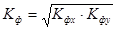
, (13)
где Kфx и Kфy - коэффициенты фильтрации тела гидроотвала соответственно в
горизонтальном и вертикальном направлениях.
Значение
коэффициента фильтрации (м/cутки),
учитывающего анизотропию намытого грунта, можно проверить по формуле И.П.
Федоренко:
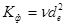
, (14)
где n - эмпирический коэффициент (принимается равным 500 и 1000
соответственно для мелкозернистых и крупнозернистых песков);
de - эффективный диаметр
частиц, отражающий фильтрационные свойства намытого грунта, мм;
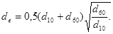
(15)
5.26.
На основании выполненных расчетов фильтрации следует определять выход
фильтрационного потока:
на
откос с дамбы обвалования или в дренаж;
в
местах примыкания дамбы обвалования к коренному берегу или основанию
гидроотвала.
5.27.
Результаты расчетов на фильтрацию проверяют в ходе наращивания гидроотвала по
данным пьезометрических наблюдений, а также наблюдений за выходом
фильтрационного потока на внешний откос. Проверочный расчет устойчивости откоса
гидроотвала необходимо производить с учетом уточненного положения кривой
депрессии.
В
случае отклонения положения фактической депрессионной кривой от допустимой
проектом гидроотвал наращивать не следует, а принятые расчетные характеристики
необходимо пересмотреть.
Расчеты
устойчивости гидроотвала
5.28.
Расчеты устойчивости внешнего откоса гидроотвала состоят в определении минимального
коэффициента запаса устойчивости при принятых высоте, заложении откосов,
положениях кривой депрессии, а также геотехнических характеристик намываемых
грунтов.
5.29.
Устойчивость следует рассчитывать для наибольших по высоте поперечных сечений
упорной призмы при наивысшем положении уровня воды в прудке-отстойнике и с
учетом наиболее слабых участков основания. Расчетные створы назначают при
проектировании в наиболее характерных местах с учетом застройки территории и
возможных зон прорыва.
5.30.
Расчеты устойчивости (приложение 7)
гидроотвалов типа А, Б, В следует производить для двух случаев:
при
наращивании гидроотвалов I и II классов капитальности;
при
завершении намыва гидроотвалов всех классов.
5.31.
Минимальный коэффициент запаса устойчивости Kзап в
зависимости от класса гидроотвала не должен быть ниже указанного в п. 5.8 СНиП II-53-73 (табл. 10).
Таблица 10
|
Нагрузки
|
Коэффициент
запаса устойчивости Kзап при классе
гидроотвала
|
|
I
|
II
|
III
|
|
Основные
|
1,25-1,3
|
1,15-1,2
|
1,10-1,15
|
|
Особые
|
1,05-1,1
|
1,05-1,1
|
1,05
|
Примечание.
Полученные расчетные значения коэффициентов запаса при основных нагрузках не
должны превышать значений, указанных в табл. 10, более чем на 15 %.
5.32.
Внешние откосы гидроотвалов должны иметь заложение, обеспечивающее их
устойчивость при намыве и в период эксплуатации гидроотвала. При этом следует
учитывать, что устойчивость откосов зависит от:
высоты
и заложения внешних откосов гидроотвала;
размеров
зон фракционирования;
геотехнических
свойств грунтов отдельных зон гидроотвала и его основания;
положения
депрессионной кривой;
объема
текучих глинистых грунтов центральной зоны и степени их консолидации.
5.33.
При проектировании уклоны внешних откосов гидроотвала необходимо назначать по
табл. 11 или по формуле
m0 = 1,3 ctg j×Kзап, (16)
где m0 -
заложение внешнего откоса, равное отношению горизонтальной проекции наружного
откоса к его высоте;
j -
угол внутреннего трения грунта, намытого в упорную призму, град;
Kзап -
коэффициент запаса устойчивости внешнего откоса гидроотвала (см. табл. 10).
Таблица 11
|
Карьерный
грунт
|
Высота
гидроотвала, м
|
При намыве на
основание
|
|
фильтрующее
|
водоупорное
|
|
допустимая
интенсивность намыва, м/мес
|
внешний откос
упорной призмы
|
допустимая интенсивность
намыва, м/мес
|
внешний откос
упорной призмы
|
|
Глина
|
< 10
|
2,5
|
1:3,0
|
2,0
|
1:3,5
|
|
10-30
|
2,0
|
1:3,5
|
1,5
|
1:4,0
|
|
> 30
|
1,0
|
1:4,5
|
1,0
|
1:4,5
|
|
Суглинок
|
<
10
|
3,0
|
1:2,5
|
2,5
|
1:3,0
|
|
10-30
|
2,0
|
1:3,0
|
2,0
|
1:3,5
|
|
> 30
|
1,5
|
1:4,0
|
1,5
|
1:4,0
|
|
Супесь
|
<
10
|
5,0-8,0
|
1:2,0
|
4,0-8,0
|
1:2,5
|
|
10-30
|
4,0-6,0
|
1:2,5
|
3,0-6,0
|
1:3,0
|
|
> 30
|
3,0-5,0
|
1:3,0
|
2,0-5,0
|
1:3,5
|
5.34.
Расчеты устойчивости откоса рекомендуется вести по методу круглоцилиндрических
поверхностей сдвига способом массового давления Р.Р. Чугаева (ВСН 04-71
Минэнерго СССР).
В
случае переслаивания грунтов различного состава и прочности в упорной призме
при водоупорном основании и большом объеме текучих грунтов в центральной части
отвала необходимо произвести проверочный расчет устойчивости откоса с
применением метода ломаных поверхностей скольжения.
5.35.
Коэффициент запаса устойчивости гидроотвала следует определять для наиболее
опасной поверхности скольжения, при которой он имеет минимальное значение. Эту
поверхность отыскивают методом последовательных приближений с учетом положения
граничных зон фракционирования (см. п. 5.4).
5.36.
При расчете устойчивости откоса следует учитывать, что грунт центральной части
гидроотвала находится в состоянии «тяжелой» жидкости (глинистой суспензии с
объемной массой скелета gск < 0,60¸0,70 г/см3 и коэффициентом бокового давления e = 1)
только до глубины 9-10 м. Ниже указанной глубины объемная масса скелета грунта
увеличивается, и коэффициент бокового давления уменьшается.
Для
наиболее опасных зон (узких сечений) упорной призмы средних и высоких
гидроотвалов типа Б и В необходимо производить проверочные расчеты устойчивости
откосов по методу разжиженного ядра (Рекомендации по проектированию хвостовых
хозяйств предприятий металлургической промышленности. М., Стройиздат, 1975).
6.1.
Состояние гидроотвалов прогнозируют для оценки устойчивости откосов и
своевременного выявления возможных оползаний и выпоров разжиженного намытого
грунта, решения вопросов о возможности дальнейшего его наращивания по высоте, а
также для предотвращения аварий и улучшения условий производства работ.
Прогнозирование
следует производить перед сдачей в эксплуатацию всех гидроотвалов независимо от
класса капитальности и в ходе наращивания гидроотвалов I и II классов (см. п. 1.5).
6.2.
При прогнозировании состояния гидроотвалов необходимо учитывать следующие
обстоятельства.
При
срезке грунта с наружного откоса гидроотвала для устройства повторного
обвалования в процессе наращивания обнажается намытый в упорную призму грунт,
поэтому путь фильтрации в наружный откос сокращается. Выход воды на откосах
является следствием нарушения технологических правил - продолжительности,
периодичности или тонкослойности намыва. Интенсивное просачивание воды в
наружный откос указывает на слабое уплотнение намытых грунтов упорной призмы,
связано с выносом грунтовых частиц и влечет за собой еще большее разуплотнение
грунта.
В
теле гидроотвала грунты консолидируются неравномерно: супесчаные грунты упорной
призмы (до gск =
1,55 г/см3) уплотняются в течение нескольких суток, консолидация же
текучего глинистого грунта в центральной зоне протекает десятилетия (см.
приложение 2).
Анализ
аварий на гидроотвалах показывает, что они происходят в основном вследствие
усиленной фильтрации воды через тело ограждающей дамбы, неравномерной осадки
основания гидроотвала, оползневых явлений в массиве гидроотвала, неисправной
работы водосбросных колодцев, деформации дамб обвалования и нарушения схемы
намыва, предусмотренной проектом, перелива потока пульпы через гребень и
размыва обвалования.
6.3.
При наращивании гидроотвалов для прогнозирования устойчивости верхних ярусов
необходимо сравнить расчетные характеристики грунта, принятые в проекте, с
фактическими, установленными по результатам контроля за качеством намыва
нижнего яруса. При расхождении значений более чем на 10 % следует
пересматривать расчеты по фракционированию и устойчивости откосов.
6.4.
При расчетах устойчивости наращиваемых гидроотвалов следует учитывать поровое
давление, возникающее ниже депрессионной кривой (по методу Водгео). Для грунтов
с коэффициентом фильтрации Kф >
0,01 м/сутки поровое давление не учитывают.
6.5.
Устойчивость гидроотвала необходимо рассчитывать с учетом процессов
консолидации глинистых грунтов промежуточной и центральной зон и основания
гидроотвала лишь в случаях, когда глинистый грунт имеет степень влажности g³0,85 с коэффициентом консолидации d < 1×107
см2/г. (СНиП II-Б.3-62).
Коэффициент
консолидации следует вычислять на основе данных геотехнического контроля (см.
приложение 2):
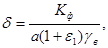
(17)
где a -
коэффициент уплотнения, см2/кг;
e1 -
начальный коэффициент пористости;
gв -
плотность воды, равная 0,001 кг/см3.
6.6.
Для прогнозирования устойчивости наращиваемых гидроотвалов I и II классов необходимо
проводить натурные наблюдения c
помощью контрольно-измерительной аппаратуры. На гидроотвалах III класса можно ограничиться только визуальными наблюдениями.
Размещение
контрольно-измерительной аппаратуры и методика наблюдений в строительный и
эксплуатационный периоды должны осуществляться в соответствии с инструкцией,
прилагаемой к проекту. Для прогнозирования состояния откосов опасных зон
(особенно в районе населенных пунктов) следует предусматривать не менее трех
створов по откосу намыва, располагаемых через 50-100 м.
6.7.
Для уточнения геологического строения тела и основания гидроотвала, а также с
целью отбора образцов грунтов по створам следует пробурить скважины - не менее
трех в упорной призме и по одной в промежуточной и прудковой зонах. Глубину
скважин необходимо задать на всю мощность намытых грунтов до основания
гидроотвала. При бурении следует отбирать пробы грунта через 1-2 м для
определения объемной массы скелета, коэффициента фильтрации, угла внутреннего
трения и сцепления. При оформлении документации должны быть указаны даты намыва
грунта и отбора проб. Для определения плотности намытых грунтов периодически
следует выполнять динамическое зондирование в упорной призме и статическое - в
промежуточной зоне. К выполнению бурения и зондирования следует привлекать
специализированные изыскательские организации.
6.8.
Для сопоставления фактического и проектного положений фильтрационного потока
необходимо проводить наблюдения за уровнем воды в пьезометрах, устанавливаемых
предпочтительно в местах, где основание гидроотвала сложено водоупорными
грунтами, а упорная призма имеет максимальную высоту при минимальных размерах
пляжа. Глубину заложения и оборудование водоприемной части пьезометров выбирают
исходя из конкретных условий. Расчетное положение депрессионной кривой следует
проверять по результатам наблюдений за уровнем воды в пьезометрах.
Коэффициенты
фильтрации и анизотропии намытых грунтов необходимо определять методом налива в
шурфы.
6.9.
Для определения степени консолидации намытых грунтов и возможных деформаций
откосов на гидроотвале следует устанавливать осадочные марки. Результаты
наблюдений деформаций в вертикальном и горизонтальном положениях сравнивают с
нормативными данными, принятыми для земляных сооружений. В случае значительных
расхождений наращивание гидроотвала не производят.
6.10.
По результатам натурных наблюдений и лабораторных определений должна быть
составлена документация (приложение 8),
на основе которой следует производить контрольные расчеты устойчивости откосов
и прогнозирование состояния гидроотвалов. Наращивать гидроотвал разрешается в
случае выполнения требований настоящей инструкции.
7.1.
При намыве гидроотвалов должен быть организован технический контроль за их
качеством.
Основная
задача контроля - сравнение полученных геотехнических характеристик грунтов с
проектными, что позволяет своевременно вносить поправки в технологию намыва и
организацию работ. Систематические контрольные наблюдения следует проводить
силами строительной организации, документацию контроля должны проверять
представители технического надзора заказчика и проектной организации не реже
двух раз в год: в предпаводковый период (начало намыва) и после окончания
сезона работ по намыву.
7.2.
Для обеспечения качества намываемого грунта необходимо проводить:
контроль
за подготовкой основания гидроотвала;
наблюдения
за разработкой карьеров с целью контроля качества разрабатываемого грунта;
наблюдения
за технологией намыва;
фиксацию
отметок намытой поверхности по рейкам, установленным на картах намыва;
отбор
проб грунта, уложенного в гидроотвал, для определения физико-механических
характеристик грунта;
отбор
проб сбрасываемой воды для определения ее концентрации и гранулометрического
состава твердой составляющей;
контроль
конфигурации, размеров и положения прудка;
контроль
за положением депрессионной кривой поверхности;
наблюдения
за деформацией откосов, осадкой и консолидацией грунта;
наблюдения
за состоянием обвалования, выходами фильтрационных вод;
обработку
полученных материалов наблюдений, анализов и лабораторных определений,
составление и оформление технической документации.
7.3.
На грунтовую лабораторию строительной организации должен быть возложен
постоянный контроль в ходе намыва за соответствием гранулометрического состава
и плотности грунтов, определяемых при намыве, принятом в проекте.
Критерием,
определяющим качество намытого грунта, должна служить проектная плотность
уложенного грунта, выражаемая объемной массой скелета и влажностью. Объемная
масса скелета грунта, намываемого в упорную призму, должна быть не менее 1,53
г/см3, а влажность - не более 16-18 %.
7.4.
Количество контрольных проб для определения объемной массы и влажности грунта
должно быть установлено в каждом конкретном случае в зависимости от класса
капитальности гидроотвала, характеристики грунтов и инженерно-геологических
условий. Точки отбора проб должны распределяться по намываемому слою
равномерно, в шахматном порядке, из расчета: одна контрольная проба на
2000-5000 м3 намытого грунта. Пробы для определения объемной массы
скелета грунта должны отбираться методом режущего кольца в каждом намытом слое
через 0,4-0,5 м по высоте.
7.5.
Необходимость более полного исследования свойств намываемого грунта
(определения коэффициента фильтрации, сопротивления грунта сдвигу и
сжимаемости) должна быть обоснована проектом.
При
лабораторных определениях следует пользоваться:
ГОСТами
по методике лабораторного определения грунтов (5179-64, 5180-64, 5181-64,
5182-64, 5283-64, 5184-64; 12248-66, 12071-66, 12374-66, 12536-67);
«Инструкцией
по контролю качества возведения намывных земляных сооружений» BCH 43-71*.
7.6.
При наблюдении за отстойным прудком необходимо фиксировать отметки уровня воды,
вести зарисовку границ по створам и промерять глубины прудка. Предельный
уровень прудка-отстойника назначают с учетом минимальной отметки гребня дамбы и
фиксируют в ходе намыва по рейкам. Рейки устанавливают у колодцев и в других
местах, удобных для наблюдений. Превышение гребня дамбы над уровнем воды в
прудке для гидроотвалов I
класса не должно быть менее 2 м, II
класса - 1,5 и III класса - 1 м.
7.7.
Наблюдения за положением поверхности фильтрационного потока следует проводить
по пьезометрическим створам, располагаемым по направлению потока от уреза
прудка-отстойника до низового откоса. Наблюдения за уровнем воды в пьезометрах
должны проводиться не менее одного раза в неделю, а в паводковый период -
ежедневно. Глубина заложения пьезометров и густота сетки их расположения
определяются высотой гидроотвалов и фильтрационными свойствами грунтов упорной
призмы и основания. При водоупорном основании пьезометры можно располагать
через 15-30 м со сгущением сети в местах выхода фильтрационного потока до 5-10
м.
7.8.
Оформление производственной документации при намыве отвалов должно
осуществляться по инструкции BCH 43-71*.
7.9.
Для записи результатов контрольных наблюдений необходимо вести:
журнал
отбора проб грунта;
журнал
наблюдений за технологией намыва, в котором фиксируют консистенцию гидросмеси,
расход и концентрацию сбросной воды, наблюдения за положением уреза воды в
отстойном прудке.
7.10.
Журналы производства работ и контроля качества намыва следует заводить на
каждом объекте до начала производства работ. По окончании работ на объекте
журнал производства работ должен быть приложен к акту сдачи-приемки объекта.
7.11.
По достижении проектной высоты гидроотвал перед сдачей должен быть
рекультивирован. Комплекс мероприятий по рекультивации гидроотвала следует предусматривать
в проекте производства работ.
Вид
рекультивации поверхности гидроотвала принимают в зависимости от назначения:
сельскохозяйственный, лесохозяйственный, водохозяйственный, рыбохозяйственный
или строительный.
Рекультивацию
необходимо производить по следующим основным этапам:
удаление
воды из прудка-отстойника;
осуществление
системы отвода весенних и ливневых вод;
выравнивание
поверхности гидроотвала;
покрытие
гидроотвала суглинистым и почвенным грунтами слоем мощностью соответственно 1 и
0,5 м;
посев
трав и посадка кустов на откосах.
Каждый
вид рекультивации в зависимости от местных условий определяет необходимость
выполнения и последовательность этапов.
|
Связный грунт
|
Число
пластичности Wп
|
Содержание
частиц d < 0,005 мм (в %
от массы сухого грунта)
|
Коэффициент
фильтрации, Kф, см/с
|
Плотность
грунта g г/cм3
|
|
Супесь
|
1
- 7
|
3
- 10
|
10-5
- 10-4
|
2,70
|
|
Суглинок
|
7
- 17
|
10
- 30
|
10-7
– 10-5
|
2,71
|
|
Глина
|
>
17
|
>
30
|
<
10-7
|
2,74
|
Глинистые
грунты имеют следующий показатель консистенции В (по табл. 7 СНиП
II-15-74):
Супеси:
твердые.................................... < 0
пластичные.............................. 0-1
текучие..................................... > 1
Суглинки
и глины:
твердые.................................................. < 0
полутвердые....................... 0-0,25
тугопластичные............ 0,25-0,50
мягкопластичные.......... 0,50-0,75
текучепластичные......... 0,75-1,00
текучие..................................... > 1
Подсчет
элементов треугольных эпюр распределения проводим для двух основных случаев -
эпюры, усеченной с одной стороны при , и эпюры, усеченной с двух сторон .
10.
Строим расчетные треугольные эпюры распределения фракций (см. табл. 2) с учетом процентного содержания
фракций в карьерном грунте и коэффициентов гидроразрыхления и определяем для
расчетных сечений соответствующие ординаты эпюр (рис. 3, б).
11.
Процентное содержание каждой фракции в составе намытых грунтов находим по
формуле
Результаты
расчета содержания фракций в сечениях 0-8 (0 и 8 - соответственно начальное и
конечное сечения, 1-7 - расчетные) приведены в табл. 3.
На
основании полученных данных строим график раскладки фракций (рис. 3, в), по которому определяем
прогнозируемый гранулометрический состав намытого грунта в любой точке откоса.
Емкость
прудка рекомендуется рассчитывать по методике Украинского научно-исследовательского
института гидротехники и мелиорации. Расчет следует производить поярусно, так
как по мере наращивания гидроотвала изменяется соотношение между площадью
отстойного прудка и пляжа.
Принимаем,
что параметры прудка зависят от гранулометрического состава карьерного грунта,
фракционирования и плотности намываемых грунтов, уклона пляжа и дна прудка
(практически с горизонтальной поверхностью).
Глубина
прудка
hпр = hпл - hя, (1)
где hпл -
высота намытого яруса относительно поверхности подошвы гидроотвала на границе
пляжа и прудка, м;
hя - высота центральной зоны (ядра), м.
Определим
, (2)
здесь V0 - объем грунта, подлежащего разработке в карьере, м3;
gск.к и gск.пл -
средняя объемная масса скелета грунта в карьере и на пляже, т/м3;
i - уклон пляжа;
П -
периметр пляжа по средней линии, м;
Lпл - длина (заложение) пляжа, м;
 Ф и Ф¢ -
среднее содержание песчаных частиц в составе грунта соответственно карьера и
пляжа, %;
Ф и Ф¢ -
среднее содержание песчаных частиц в составе грунта соответственно карьера и
пляжа, %;
Ф² - содержание песчаных частиц,
попадающих за пределы пляжа (% от массы грунта упорной призмы).
Для
косогорных или овражно-балочных гидроотвалов необходимо делать поправку путем
вычитания из уклона пляжа i
значения среднего уклона основания i0.
Кроме того, поправку вносят, если уклон поверхности яруса заметно отличается от
уклона поверхности нижележащего яруса, служащего для него основанием.
При
расчете высоты ярусов, уклоны поверхности которых различаются незначительно,
рекомендуется использовать формулу
. (3)
Высоту
ядра hя определяют из выражения
hяgск.я = M,
где gск.я - средняя объемная масса скелета грунта ядра для данного яруса,
определяемая в зависимости от высоты яруса (см. табл. 5 и рис. 8);
М -
параметр, постоянный для заданных конкретных условий;
, (4)
здесь Fпр - площадь прудка (ядра), определяемая по общей площади
гидроотвала и принятой ширине пляжа.
Если
при этом hяgск.я < M, то
прудок полностью заилился при заданных условиях. В случае hяgск.я ³ M этого не происходит.
Значение
hя находят методом последовательного приближения до получения hяgск.я = M
Подставляя
фактические данные в формулы (2) и (4), соответственно находим:
м;
т/м2.
Отсюда м;
hпр = hпл - hя = 16 - 15 = 1 м.
Емкость
прудка определяют как произведение его площади на глубину
Eпр = Fпрhпр = 216000´1,0 = 216000 м3.
При
расчете положения депрессионной кривой в гидроотвале принимаем следующие
условия:
уровень
воды в отстойном прудке максимальный;
длина
пляжа (упорная призма) L =
60 м, высота гидроотвала 20 м;
коэффициент
фильтрации намытого грунта Kф для
упорной призмы равен 0,9 м/сутки, а для промежуточной зоны - 0,01 м/сутки;
коэффициент
анизотропии A < 4;
под
намытыми грунтами в основании гидроотвала залегают насыпные суглинки, условно
принятые за водоупор;
поверхность
водоупора в основании гидроотвала горизонтальная;
заложение
наружного откоса 1:4, заложение границы раздела упорной призмы и промежуточной
зоны 1:9.
Схема
расчета положения фильтрационного потока приведена на рисунке.
Удельный
фильтрационный расход q и
глубину потока h1 в сечении I-I находим подбором по двум уравнениям:
; (1)
, (2)
где Kфт - коэффициент фильтрации грунтов, слагающих упорную призму;
l, r1, r2, i, m -
расчетные коэффициенты;
;
mп - заложение расчетной поверхности промежуточной зоны;
;
aп -
расчетный угол наклона;
l1, l2, Hh, h2 - параметры, которые принимают по данным натурных замеров на
гидроотвале (см. рисунок);
;
iп = sinaп; i = sin a -
расчетные коэффициенты;
aу.п -
угол наклона основания дамбы гидроотвала;
s - коэффициент, значение которого при l2
> 0 принимают равным 1.
Схема
расчета фильтрации гидроотвала на непроницаемом основании при отсутствии
дренажа:
1 -
пляж (упорная призма и промежуточная зона); 2 - центральная (прудковая) зона;
3, 3¢ -
зоны инфильтрации при длине пляжа соответственно L и Lмин; 4 - расчетная кривая депрессии; 5, 6 - граница раздела
промежуточной и центральной зон (соответственно расчетная и действительная); 7
- кривая депрессии, рассчитанная на критическое положение
Расчетные
значения угла наклона aп и заложения mп
приведенной поверхности промежуточной зоны (см. рисунок)
вычисляют соответственно по формулам:
(3)
(4)
где Kфи - коэффициент фильтрации промежуточной зоны.
Для
определения значений q и h1 строим совмещенный график
двух кривых q = f(h1). По уравнениям (1) и (2) при различных задаваемых значениях h1
вычисляем q. Значения q и h1 откладываем
соответственно на оси x и y. Точка пересечения кривых на графике
показывает на соответствующих осях координат искомые значения q и h1.
Глубину
фильтрационного потока в сечениях II-II вычисляем по формуле
.
Положение
кривой депрессии между сечениями I-I и II-II определяем по зависимости
где 0 £ x £ l1 (x - расстояние от сечения I-I до
расчетной точки).
Для
примера были взяты фактические параметры фильтрационного потока возводимого
гидроотвала.
Результаты расчетов глубины потока hx,
сопоставленные с фактическими данными, представлены в таблице.
|
Точка замера
глубины потока
|
Глубина
потока (условная отметка положения депрессионной кривой), м
|
|
фактическая
(по пьезометрам)
|
расчетная при
L > 60 м
|
расчетная при
Lмин = 60
м
|
|
1 - упорная призма
|
6,97
|
7,1
|
10,1
|
|
2 - упорная призма
|
12,52
|
10,5
|
13,4
|
|
3 - промежуточная зона
|
14,10
|
13,2
|
16,6
|
|
4 - прудковая зона
|
18,76
|
18,5
|
19,0
|
Установлено,
что депрессионная кривая, рассчитанная на критическое положение при минимально
допустимом расстоянии от уреза прудка до бровки низового откоса дамбы Lмин, близко подходит к поверхности низового откоса при ширине пляжной
зоны 60,0 м. Наращивание гидроотвала в данном случае может привести к выходу
депрессионной кривой на откос, что вызовет сползание и выпирание грунтов.
А.
Расчет произведен по методу круглоцилиндрических поверхностей сдвига грунта
способом массового давления Р.Р. Чугаева с учетом фракционирования намываемого
грунта по зонам (см. приложение 3).
В
качестве примера рассмотрим гидроотвал, проектируемый из вскрышных глинистых
грунтов с содержанием 60 % частиц менее 0,05 мм. Размеры гидроотвала: высота
откоса H = 23 м; заложение откоса m0 -
3,5; заложение кривой депрессии m = 5,5.
Расчетные
физико-механические характеристики грунтов принимаем по пп. 5.7-5.13
настоящей инструкции. Схема расчета устойчивости показана на рисунке.
Грунт
1 - верхний слой намытого грунта выше депрессионной кривой MM1:
объемная
масса практически сухого грунта g1 =
1,6 г/см3;
угол
внутреннего трения j1 = 30°;
удельное
сцепление С1 = 0,07 кгс/см2.
Грунт
2 - нижний слой намытого грунта ниже депрессионной кривой MM1:
объемная
масса взвешенного в воде грунта = 1,0 г/см3;
объемная
масса грунта, насыщенного водой = 2,0 г/см3;
угол
внутреннего трения j2 = 26°;
удельное
сцепление С2 = 0,04 кгс/см2.
Грунт
3 - грунт основания гидроотвала:
объемная
масса взвешенного в воде грунта = 1,1 г/см3;
объемная
масса грунта, насыщенного водой, = 2,1 г/cм3;
угол
внутреннего трения j3 = 20°;
удельное
сцепление С3 = 0,11 кгс/ см2.
Схема
расчета устойчивости откоса
I - упорная призма; II -
промежуточная зона; 1-8 - номера «столбиков»
|
Номер
«столбика» (см. рисунок)
|
Dl
|
x
|
H1
|
H2
|
H3
|
H1g1
|
H2g2
|
|
n
|
|
1
|
2,5
|
-29
|
0,7
|
0,0
|
0,0
|
1,12
|
0,0
|
1,12
|
1,18
|
|
2
|
8,5
|
-24
|
1,0
|
3,0
|
0,0
|
1,60
|
3,0
|
4,60
|
1,00
|
|
3
|
8,2
|
-16
|
1,5
|
5,5
|
2,1
|
2,40
|
5,5
|
10,00
|
0,75
|
|
4
|
8,0
|
-8
|
2,0
|
7,0
|
3,5
|
3,20
|
7,0
|
13,70
|
0,75
|
|
5
|
8,0
|
0
|
2,2
|
9,0
|
4,0
|
3,52
|
9,0
|
16,52
|
0,75
|
|
6
|
8,1
|
8
|
2,5
|
10,4
|
3,6
|
4,00
|
10,4
|
18,00
|
0,75
|
|
7
|
8,1
|
16
|
3,1
|
12,5
|
2,2
|
4,95
|
12,5
|
19,65
|
0,75
|
|
8
|
8,2
|
24
|
4,0
|
14,0
|
0,0
|
6,40
|
14,0
|
20,40
|
1,00
|
|
9
|
9,0
|
32
|
4,1
|
12,1
|
0,0
|
6,55
|
12,1
|
18,65
|
1,00
|
|
10
|
9,7
|
40
|
4,5
|
9,5
|
0,0
|
7,20
|
9,5
|
16,70
|
1,00
|
|
11
|
10,0
|
48
|
3,3
|
5,0
|
0,0
|
5,27
|
5,0
|
10,27
|
1,00
|
|
12
|
6,0
|
50
|
2,0
|
0,1
|
0,0
|
3,20
|
0,1
|
3,30
|
1,18
|
Продолжение
таблицы
|
Номер
«столбика» (см. рисунок)
|
|
|
|
|
|
m
|
mDl
|
|
1
|
1,32
|
0,0
|
0,00
|
1,12
|
-32,5
|
1,75
|
4,37
|
|
2
|
4,60
|
6,0
|
0,00
|
7,60
|
-182,0
|
1,00
|
8,50
|
|
3
|
7,45
|
11,0
|
4,40
|
16,90
|
-110,0
|
2,75
|
22,50
|
|
4
|
10,05
|
14,0
|
7,35
|
24,55
|
-196,0
|
2,75
|
22,00
|
|
5
|
12,30
|
18,0
|
8,40
|
29,92
|
0,0
|
2,75
|
22,00
|
|
6
|
13,40
|
20,8
|
7,56
|
32,36
|
258,2
|
2,75
|
22,30
|
|
7
|
14,65
|
25,0
|
4,62
|
34,57
|
553,0
|
2,75
|
22,30
|
|
8
|
20,40
|
28,0
|
0,00
|
34,40
|
825,0
|
1,00
|
8,20
|
|
9
|
18,65
|
24,2
|
0,00
|
30,75
|
985,0
|
1,00
|
9,00
|
|
10
|
16,70
|
19,0
|
0,00
|
26,20
|
1049,0
|
1,00
|
9,70
|
|
11
|
10,27
|
10,0
|
0,00
|
15,27
|
734,0
|
1,00
|
10,00
|
|
12
|
3,90
|
0,2
|
0,00
|
3,40
|
170,0
|
1,75
|
10,50
|
|
S133,69
|
|
|
|
S4053,7
|
|
S171,37
|
Коэффициент
запаса Кзап рассчитываем для наиболее опасного положения отсека
обрушения, соответствующего минимальному значению Кзап.мин, для
которого дугу сдвига находят методом подбора. Сопоставляя полученные значения,
устанавливаем Кзап.мин. По таблице можно определить минимальное
значение коэффициента запаса при предполагаемом, наиболее опасном положении
отсека и дуге сдвига радиусом R =
75 м, проходящей на границе упорной призмы I и
промежуточной зоны II.
Согласно
указанному способу отсек обрушения разбиваем на вертикальные «столбики»
(фрагменты) шириной b = (1/3¸1/4)H и через центр окружности
скольжения проводим ось y.
При этом необходимо, чтобы в пределах подошвы каждого «столбика» грунт
оказывался однородным по углу внутреннего трения j и сцеплению С.
Ширину «столбика» в данном случае принимаем b = 8
м.
Для
расчета из числа имеющихся значений tgj и С
выбираем по одному (любому); эти значения назовем «основными» для области
грунта вдоль намеченной дуги сдвига и обозначим tgjд.ос и С
д.ос.
Принимаем
tgjд.ос = tgj2 = tg26° = 0,488; С д.ос = С2 =
0,04 кгс/см2. При этом получаем поправочные коэффициенты n и m:
для
грунта 1
;
;
для
грунта 2
;
для
грунта 3
.
Для
неоднородного грунта (см. рисунок)
где Sуд и Sсдв -
удерживающие и сдвигающие усилия, кгс/см2;
H1, H2, H3 - мощность слоя соответственно грунта 1; 2; 3, м;
Dl - длина дуги сдвига в
основании «столбика» грунта, м;
x -
расстояние от вертикали, проходящей через центр дуги сдвига, до середины
расчетного «столбика», м (вправо от вертикали x
имеет отрицательное значение, влево - положительное).
Подставив данные из таблицы, находим
Таким
образом, для приведенных условий Kзап = Kзап.мин = 1,22, что отвечает требованиям СНиП II-53-73 к устойчивости откосов гидроотвала II
класса.
Б.
Оценка устойчивости упорной призмы гидроотвала под давлением глинистых грунтов
центральной зоны произведена по методу М.М. Гришина и Б.Н. Федорова.
Коэффициент
запаса устойчивости
,
где b - оптимальная ширина основания упорной призмы гидроотвала, м;
g -
объемная масса грунта упорной призмы при естественной влажности, т/м3;
gуп -
угол внутреннего трения сдвигаемого грунта упорной призмы, град;
g1 -
объемная масса глинистых грунтов центральной зоны, т/м3;
H - высота гидроотвала, м;
a -
угол наклона наружного откоса гидроотвала, град;
jц.з -
угол внутреннего трения глинистого грунта центральной зоны, град.
Оптимальная
расчетная ширина в основании упорной призмы
.
В
качестве примера рассмотрим тот же гидроотвал, что и в случае А. Подставив в
формулу значения H = 23 м, заложения откоса m0 = 3,5(ctga), глубины прудка-отстойника
0,2-0,4 м, g1 =
1,2 т/м3, g = 2,0 т/м3, gц.з =
10°, gу.п =
26°, получим
м.
Фактическая
ширина упорной призмы гидроотвала с указанными параметрами 48 м, что
обеспечивает его устойчивость при возведении до высоты 25 м.
Условия
возведения гидроотвала
Карьерный
грунт: песок 49,7 %; супесь 3,5 %; суглинок, глина 46,8 %.
Рис.
1. Форма гидроотвала
Рис.
2. Средний гранулометрический состав грунтов
1,
2, 3 - зоны; 4 - карьерный грунт
Рис.
3. Литологический разрез по створу
Площадь
гидроотвала: поверху Sв =
68 га, понизу Sн = 103 га.
Уклон
внешних откосов 1:4.
Обвалование
возводится из намытого грунта.
Объем
ежегодного намыва 2,5-3,0 млн.м3.
Высота
яруса намыва 2,5-3,0 м.
Высота
гидроотвала 32 м.
Расчетный
коэффициент запаса на устойчивость гидроотвала Кзап = 1,51.
Технологические
параметры намыва
Тип
землесосного оборудования........................................................................ ЗГМ-2М
Производительность
землесосного оборудования по пульпе, м3/ч............. 1600-1700
Способ
выпуска пульпы.................................................................... Рассредоточенный
Удельный
расход пульпы в начальном сечении, м3/ч×м........................................ 10-60
Объемная
консистенция пульпы....................................................................... 0,10-0,22
Средняя
скорость потока на пляже, м/с................................................................ 0,4-0,6
Средний
уклон пляжа намыва................................................................................... 0,03
Средняя
длина намываемого откоса, м............................................................... 300-700
Средняя
интенсивность намыва, м/мес................................................................. 0,5-0,9
Слой
намыва, м........................................................................................................ 0,4-0,6
Максимальный
период намыва, сут............................................................................ 1-2
Минимальный
период подсушки намытого слоя, сут.............................................. 3-6
Тип
водосбросного сооружения......................................................... Насосная
станция
Расход
осветляемой воды, м3/ч:
максимальный................................................................................................... 3200
средний.............................................................................................................. 1600
Плотность
осветленной воды на водосбросе, кг/л
максимальная..................................................................................................... 1,01
средняя.............................................................................................................. 1,003
Сброс
фракции в гидроотвал, %...................................................................................... -
Характеристика
потока пульпы и намытых грунтов по зонам приведена в табл. 1.
Таблица 1
|
Параметры
|
Зона 1
(упорная призма)
|
Зона 2
(промежуточная)
|
Зона 3
(центральная)
|
|
Относительный объем зоны
|
0,4
|
0,25
|
0,35
|
|
Намытый грунт
|
Песок,
супесь
|
Супесь,
суглинок
|
Глина,
суглинок
|
|
Содержание фракций:
|
|
|
|
|
d > 0,05 мм
|
90
|
55
|
20
|
|
0,005
м < d < 0,05 мм
|
9
|
33
|
45
|
|
d < 0,005 м
|
1
|
12
|
35
|
|
Скорость потока пульпы,
м/с
|
0,3-0,8
|
0,07-0,3
|
0,01-0,05
|
|
Глубина потока, м
|
0,02-0,06
|
0,01-0,2
|
0,05-0,7
|
|
Уклоны откоса намыва
|
0,02-0,05
|
0,005-0,02
|
0,001-0,02
|
|
Объемная масса скелета gск
, г/см3
|
1,5-1,8
|
1,2-1,5
|
0,4-1,1
|
|
Средний коэффициент
гидроразрыхления, Кр
|
1,1
|
1,2
|
1,9
|
|
Естественная влажность Wе , %
|
15-25
|
25-45
|
50-90
|
|
Коэффициент фильтрации Kф, м/сут
|
0,2-0,9
|
0,01
|
1´10-5
|
|
Угол внутреннего трения j,
град
|
25-30
|
4-10
|
0-3
|
|
Параметр сцепления С,
кгс/см2
|
0,01-0,04
|
0,2-0,4
|
<
0,2
|
Изменение
физико-механических свойств глинистых грунтов центральной зоны приведено в
табл. 2.
Таблица 2
|
Параметры
|
Период
консолидации глинистого грунта после намыва
|
|
4-6 суток
|
5 мес.
|
1 год
|
3 года
|
10 лет
|
|
Объемная масса скелета gск,
г/см3
|
0,5
|
0,7
|
0,9
|
1,1
|
1,35
|
|
Естественная влажность Wе, %
|
180,0
|
100,0
|
75,0
|
55,0
|
35,0
|
|
Угол внутреннего трения j,
град
|
-
|
-
|
-
|
0-4
|
4-7
|
|
Удельное сцепление C, кгс/см2
|
-
|
-
|
-
|
0,01
|
0,3
|
СОДЕРЖАНИЕ